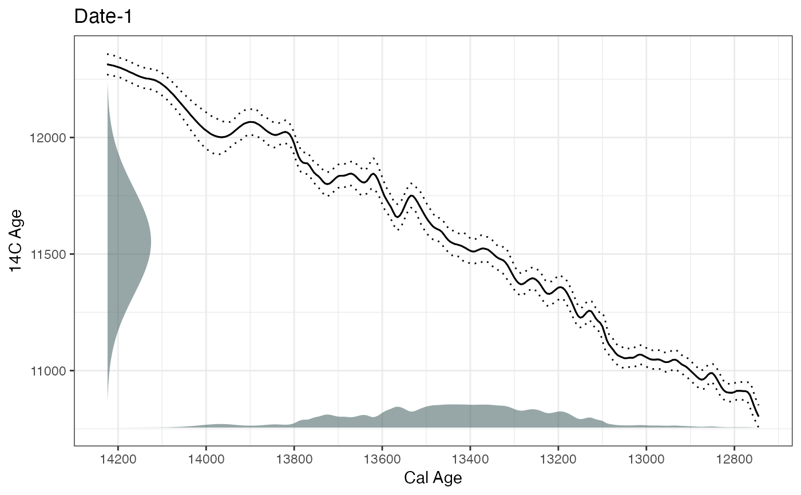
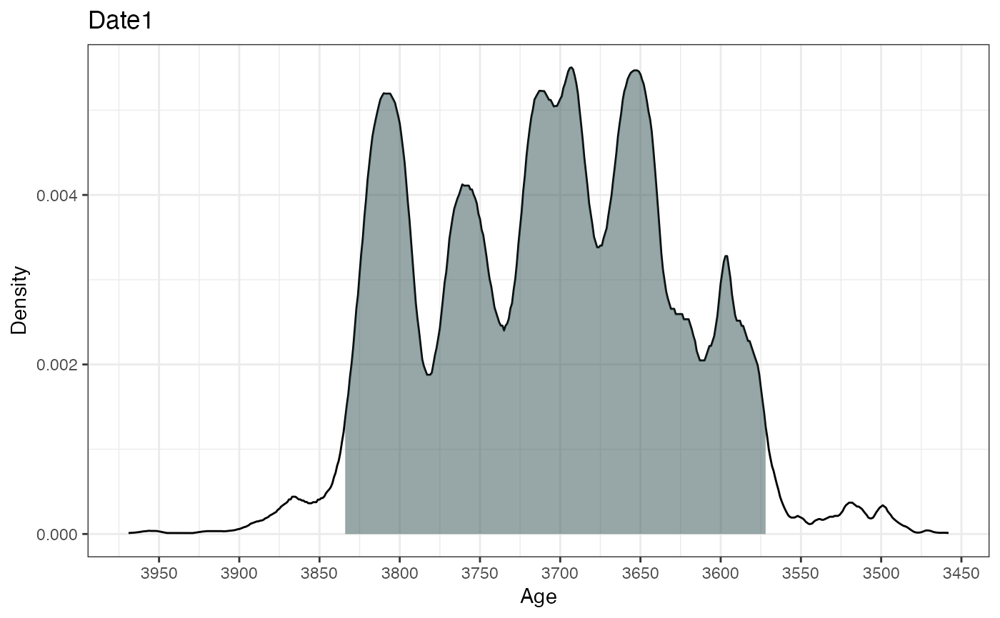

A fast function for calibrating large numbers of radiocarbon dates involving multiple calibration curves
BchronCalibrate( ages, ageSds, calCurves, ids = NULL, positions = NULL, pathToCalCurves = system.file("data", package = "Bchron"), eps = 1e-05, dfs = rep(100, length(ages)) )
| ages | A vector of ages (most likely 14C) |
|---|---|
| ageSds | A vector of 1-sigma values for the ages given above |
| calCurves | A vector of values containing either |
| ids | ID names for each age |
| positions | Position values (e.g. depths) for each age |
| pathToCalCurves | File path to where the calibration curves are located. Defaults to the system directory where the 3 standard calibration curves are stored. |
| eps | Cut-off point for density calculation. A value of eps>0 removes ages from the output which have negligible probability density |
| dfs | Degrees-of-freedom values for the t-distribution associated with the calibration calculation. A large value indicates Gaussian distributions assumed for the 14C ages |
A list of lists where each element corresponds to a single age. Each element contains:
The original age supplied
The original age standard deviation supplied
The position of the age (usually the depth)
The calibration curve used for that age
A grid of age values over which the density was created
A vector of probability values indicating the probability value for each element in ageGrid
The label given to the age variable
The label given to the position variable
This function provides a direct numerical integration strategy for computing calibrated radiocarbon ages. The steps for each 14C age are approximately as follows: 1) Create a grid of ages covering the range of the calibration curve 2) Calculate the probability of each age according to the 14C age, the standard deviation supplied and the calibration curve 3) Normalise the probabilities so that they sum to 1 4) Remove any probabilities that are less than the value given for eps Multiple calibration curves can be specified so that each 14C age can have a different curve. For ages that are not 14C, use the 'normal' calibration curve which treats the ages as normally distributed with given standard deviation
# Calibrate a single age ages1 = BchronCalibrate(ages=11553,ageSds=230,calCurves='intcal13',ids='Date-1') summary(ages1)#> 95% Highest density regions for Date-1 #> $`84.9%` #> [1] 12953 13863 #> #> $`9.7%` #> [1] 13886 13939 #> #>plot(ages1)# Calibrate multiple ages with different calibration curves ages2 = BchronCalibrate(ages=c(3445,11553,7456),ageSds=c(50,230,110), calCurves=c('intcal13','intcal13','shcal13')) summary(ages2)#> 95% Highest density regions for Date1 #> $`94.4%` #> [1] 3587 3834 #> #> #> 95% Highest density regions for Date2 #> $`84.9%` #> [1] 12953 13863 #> #> $`9.7%` #> [1] 13886 13939 #> #> #> 95% Highest density regions for Date3 #> $`94.6%` #> [1] 8011 8406 #> #>plot(ages2)#> [[1]]#> #> [[2]]#> #> [[3]]#># Calibrate multiple ages with multiple calibration curves and including depth ages3 = BchronCalibrate(ages=c(3445,11553),ageSds=c(50,230),positions=c(100,150), calCurves=c('intcal13','normal')) summary(ages3)#> 95% Highest density regions for Date1 #> $`94.4%` #> [1] 3587 3834 #> #> #> 95% Highest density regions for Date2 #> $`94.7%` #> [1] 11100 12005 #> #>